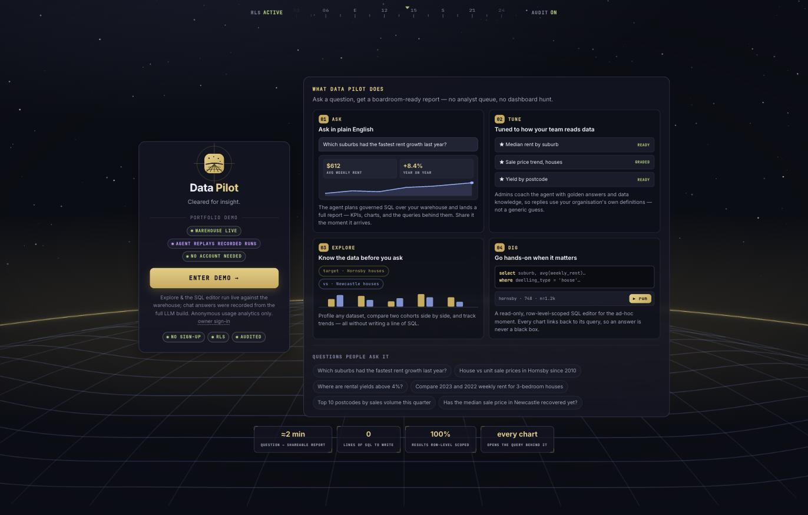
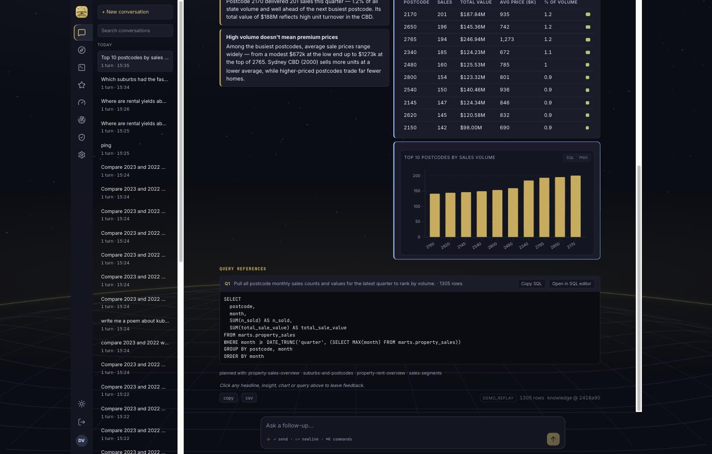
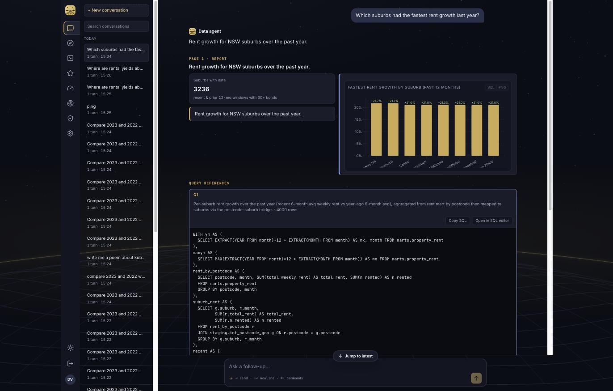
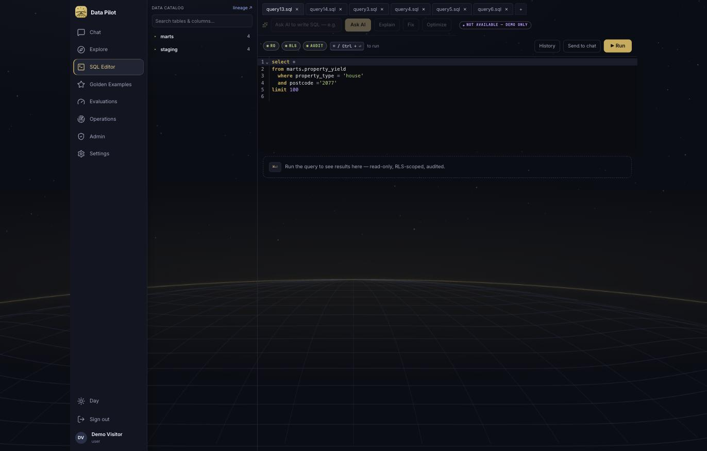
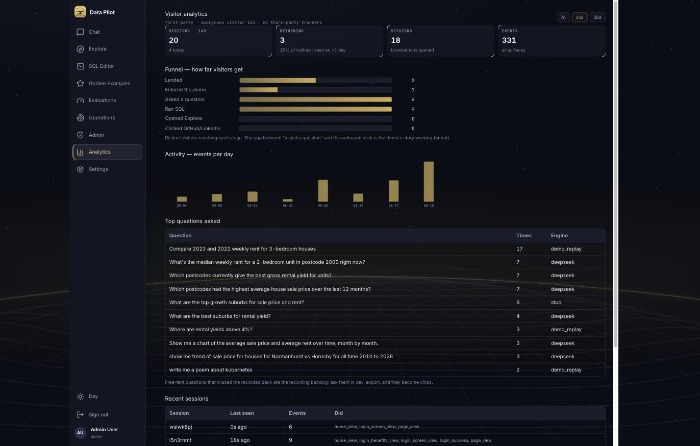

The s38 plan is now working software on the demo-mode branch: one flag turns
a deployment into the walk-in portfolio demo — recorded agent replays, live Explore/SQL, flagged LLM
controls, first-party analytics with its own tab, per-IP and concurrency guardrails, a seeded demo
identity, a version-controlled demo pack, and a Terraform profile that deletes the data-agent service.
Dev keeps every capability. 34 files changed, 13 new, ~1,000 lines.
Screenshots from the running local stack in demo mode (make demo-up).



DEMO_REPLAY. Every demo answer is
persisted to query_runs like real traffic, so audit and analytics count it.

app/demo_replay.py loads app/demo_pack/*.json (8 recorded questions,
1.8MB, version-controlled, baked into the image) into memory at first use — so chat replay
never touches the database and is immune to Aurora cold starts. /ask/stream's
demo branch synthesizes the same SSE frames a live run emits: friendly progress steps derived from
the stored trace, the plan frame's ghost slots, one page frame per stored page, then the
normal persist + result. Free text resolves by a blended scorer (SequenceMatcher +
stop-word-filtered content-word overlap — pure difflib scored unrelated sentences ~0.45, too high);
near-matches carry demo_matched_question so the bubble shows "closest recorded answer";
genuine misses answer honestly and list the chips.
DEMO_MODE=1 makes /auth/config report auth_mode:"demo";
the landing card's ENTER DEMO calls POST /auth/demo-login, which mints the standard 8h
HS256 session for the seeded demo user (migration 0033: role user, plan pro, read on all
datasets — RLS fully applies). The endpoint 404s outside demo mode. In prod the deployment keeps
AUTH_MODE=google: the token dispatcher tries the cheap local HS256 decode first and falls
through to Google JWKS verification, so the owner door (the "owner sign-in" link on the card)
signs in admin_emails with real Google OIDC on the same deployment.
All LLM traffic flows through one module; agent_client.py now opens with a demo guard
that 501s not_available_demo from all seven LLM functions — a missed UI gate cannot leak.
On top, the DemoGate wrapper renders controls visible-but-inert with the
◆ "Not available — demo only" chip (SQL AI bar, goldens "Draft with agent"). Goldens / Evals / Ops /
Admin open read-only for visitors via a new admin_or_demo_read dependency on exactly 12
GET endpoints — every write keeps require_admin. The migrate job also gained
seed_goldens.py: the version-controlled goldens pack now imports on every deploy and
every make up (32 cases), closing the dev→prod content gap you flagged.
The existing track() beacon now stamps every event with an anonymous
visitor_id (localStorage crypto.randomUUID(); sessionStorage session id was
already there). New events: demo_landing_view, demo_enter_click,
page_view {tab}, chip_click. routers/analytics.py aggregates on
the admin_ro engine (uniques, returning = ids seen >1 day, funnel, daily, top questions, sessions)
for the new admin-only Analytics tab — never visible to visitors, in dev and prod alike.
Per-IP sliding windows (ask/sql 10/min, events 60/min + 2KB payload cap), a global 20-in-flight
concurrency gate (503 demo_full), an in-process janitor deleting demo conversations
older than 24h (events/query_runs kept — they ARE the analytics), and friendly frontend copy for
every limit. The SQL editor's governed executor was ported into backend-api
(sql_exec.py + a verbatim copy of the agent's sql_guardrails.py, sqlglot AST
layer included, tighter 5s/500-row demo caps) — which is what lets Terraform's new
demo_mode variable delete the data-agent service (count 0), blank AGENT_URL,
and skip its alarm, while everything else stays intact.
Same images, same frontend bundle; demo is a runtime flag read from /auth/config.
13 new unit tests pin the contract (choke point 501s, fuzzy resolution, honest misses, rate windows,
demo-login 404 when off) and make demo-smoke runs 21 end-to-end checks against a live
demo stack. Full make smoke still passes in dev mode — live LLM behaviour unchanged.
| File | Change |
|---|---|
app/demo_replay.py NEW | The replay engine: pack loading, blended fuzzy scorer, honest-miss answer, paced SSE frame synthesis. |
app/demo_pack/*.json NEW | 8 recorded runs (question, answer, SQL, trace, report pages) — version-controlled, ships in the image. |
app/sql_exec.py NEW | Governed executor port: agent_ro/admin_ro engines, RLS context, SET LOCAL timeout, row cap, catalog introspection (visitor-scoped to marts/staging). |
app/sql_guardrails.py NEW | Verbatim copy of the agent's guardrails (regex + sqlglot AST + forbidden functions); sqlglot added to deps. |
app/routers/analytics.py NEW | Admin-only rollups: totals, funnel, daily, top events/questions, recent sessions — on admin_ro. |
app/config.py | Demo settings block: flag, username, fuzzy threshold, concurrency, per-IP limits, demo SQL caps, agent_ro URL, origin-verify secret. |
app/auth.py | Demo token dispatch (HS256 first, Google fallthrough), cookie acceptance in demo, admin_or_demo_read. |
app/routers/auth.py | auth_config demo branch (client_id rides along for the owner door); /auth/demo-login; shared _session_for refactor. |
app/routers/ask.py | Demo branches in run_question + /ask/stream (replay, skip LLM cap, skip retitle); demo_matched_question on AskResponse; per-IP limits; GET /demo/questions. |
app/agent_client.py | The choke point: _demo_blocked() at the top of all 7 LLM functions → 501 not_available_demo. |
app/routers/sql.py | Demo: run via local executor, AI assist 501s early, catalog served locally; route/helper split (execute_editor_sql) so the MCP surface keeps its direct call. |
app/limits.py | In-memory per-IP sliding windows (+XFF parsing, idle-window pruning); None-request bypass for key-gated internal callers. |
app/main.py | Concurrency-gate + origin-verify middleware; demo janitor task in lifespan (RLS-context-correct); analytics router registered. |
app/routers/events.py | Per-IP event rate limit + 2KB payload cap in demo; 4 admin list GETs widened to admin_or_demo_read. |
app/routers/goldens.py · evals.py · ops.py | Read endpoints widened to admin_or_demo_read (4+2+2); all writes untouched. |
tests/test_demo_mode.py NEW | 13 tests: choke point on/off, resolution + misses, replay frames, rate windows, doors. |
| File | Change |
|---|---|
src/lib/api.ts | visitor_id minting + on every track(); demoLogin/getDemoQuestions/getAnalyticsSummary; AuthConfig + AskResult types; friendly messages for demo_full/demo_rate_limited/not_available_demo. |
src/lib/auth.ts | loginDemo(), isDemoMode(); Google button renders in demo too (the owner door). |
src/app/Login.tsx | Demo card branch: chips, ENTER DEMO, fine print, owner sign-in reveal; landing pre-warm + demo_landing_view. |
src/app/App.tsx | demo auth mode; chip-rail fetch; route guard lets visitors into exhibits but never Analytics; page_view tracking; Analytics route. |
src/app/NavRail.tsx · MobileNav.tsx | Analytics view (adminStrict); nav shows adminOnly exhibits to demo visitors. |
src/features/chat/ChatPage.tsx | Demo chips replace static suggestions (with chip_click events); "closest recorded answer" note on fuzzy matches. |
src/features/sql/SqlEditor.tsx · goldens/GoldensPage.tsx | AI bar and "Draft with agent" wrapped in DemoGate. |
src/ui/DemoGate.tsx NEW | "Flag, don't hide": visible-inert wrapper + ◆ chip with the full-sentence tooltip. |
src/features/analytics/AnalyticsPage.tsx NEW | The dashboard: HudBox KPI row, funnel bars, daily bars, top questions, recent sessions; 7/14/30d windows, 60s auto-refresh. |
src/styles.css | Demo chips/button/fine-print, DemoGate + match-note, analytics funnel/daily styles. |
| File | Change |
|---|---|
services/db-migrate/…/0033_demo_user.py NEW | Seeds the shared walk-in identity (user, plan pro, read on all datasets). Idempotent. |
services/db-migrate/seed_goldens.py NEW | Imports evals/cases/*.yaml into app.eval_cases on every migrate run (32 cases) — the dev→prod content pipeline. Non-fatal by design. |
scripts/demo_pack.py NEW | The recorder's other half: list candidate runs, export --runs/--latest into the pack, show. |
scripts/demo_smoke.py NEW | 21 end-to-end demo checks (door, replay, fuzzy, miss, executor, guard 501s, exhibits, 403s, beacon, 429). |
Makefile | make demo-up / make dev-up / make demo-smoke. |
docker-compose.yml | DEMO_MODE passthrough + AGENT_RO_DATABASE_URL for the local executor. |
infra/terraform/foundations | var.demo_mode: data-agent service count 0, its alarm count 0, AGENT_URL blanked, DEMO_MODE env, output made safe. terraform validate passes. |
make demo-up # backend flips to demo (frontend unchanged) make demo-smoke # 21 end-to-end checks make dev-up # back to full dev — LLM, agent, everything
The stack is left in dev mode right now. Chat replay, chips, DemoGate, exhibits and the capacity/rate errors are all runtime — no rebuild to flip.
· ask the questions in dev (any surface, LLM on) uv run python scripts/demo_pack.py list uv run python scripts/demo_pack.py export --runs id1,id2 uv run python scripts/demo_pack.py show # then commit
Free-text misses on the Analytics tab are the shopping list for what to record next.
# infra/terraform/foundations/terraform.tfvars demo_mode = true db_max_acu = 1
Merge → the normal deploy runs. First demo deploy destroys the data-agent App Runner service (the
~$25–35/mo idle line). The owner door is Google sign-in via "owner sign-in" on the landing card,
restricted to admin_emails. Do a Cost Explorer check a few days after.
ORIGIN_VERIFY_SECRET is set.demo_smoke.py already accepts SMOKE_API_URL
so wiring it is small.